La ligne de statut, cas par cas
Guide utilisateur de statusline pour Claude Code sous Windows — version 2.4.0
Cette page montre tout ce que la ligne de statut peut afficher, et pourquoi elle l'affiche
ainsi. Toutes les figures sont de vraies sorties du programme : chaque image est
le rendu de statusline.exe sur un payload fabriqué, converti cellule par cellule en SVG
par guide/generer-guide.ps1. Rien n'est dessiné à la main ; ce que vous voyez ici est
ce que le binaire écrit, aux teintes près que votre terminal applique.
1. Lire la capsule
La ligne est une capsule à compartiments. De gauche à droite : sous quel régime on travaille, ce qui tourne, où l'on est, et ce que la session consomme. Chaque compartiment a son fond ; les caps arrondis, les jonctions et les deux bords fins sont tracés dans un gris de contour — sauf autour d'une mesure en alerte, qui les prend à son encre.
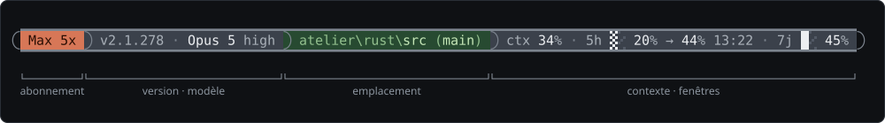
Trois règles suffisent à lire tout ce qui suit :
- Ce qui est ordinaire se tait, ce qui s'écarte se voit. Un mode inhabituel, un contexte étendu, une projection au-dessus du seuil : la ligne les marque. Le reste du temps, elle ne dit que le nécessaire.
- Ce qui manque se retire. Pas de compte lisible, pas de tête ; pas de dépôt Git, pas de parenthèses ; pas de mesure, pas de segment. La capsule se resserre au lieu d'afficher des vides — et elle n'est jamais blanche : une ligne vide effacerait l'affichage dans Claude Code, ce qui est pire qu'une information partielle.
- La couleur d'une mesure dit son palier. Ardoise sous les seuils, ambre sombre dès que le compteur franchit son seuil d'alerte, rouge sombre au seuil critique — et son cadre prend l'encre du palier. L'œil n'a pas à lire les nombres pour savoir s'il faut lever le pied, ni lequel des trois l'exige.
2. La tête : l'abonnement
Le payload que Claude Code envoie à la ligne de statut ne dit rien de l'abonnement. La tête se lit
donc dans ~/.claude.json, sous oauthAccount.organizationType, complété
pour Max par organizationRateLimitTier (palier 5x ou 20x). C'est l'information qui
ouvre la ligne parce qu'elle en est le cadre : c'est elle qui décide de la taille des fenêtres de
limitation affichées à l'autre bout.
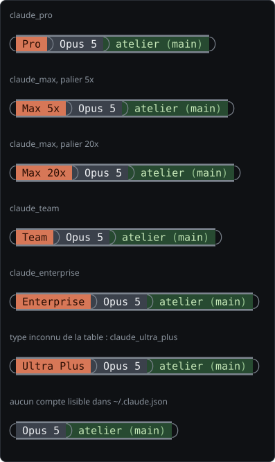
claude_ultra_plus → « Ultra Plus ») : le jour
où un abonnement apparaît, la ligne l'affiche sans recompilation. Sans oauthAccount
lisible — fichier absent, session non connectée —, la tête ne s'affiche pas et la capsule commence
par l'identité.3. L'identité : modèle, conduite de la session
La version de Claude Code n'y figure plus depuis la 2.3.0 : un numéro qui ne change qu'à une mise à jour occupait une dizaine de colonnes pour rien le reste du temps.
Le modèle
Le nom vient de model.display_name. La famille du modèle — lue dans
model.id, à défaut dans le nom — n'est pas affichée en tant que telle, mais elle
compte plus loin : la fenêtre de 7 jours abaisse ses seuils sous un modèle plus coûteux
(§ 5.6).
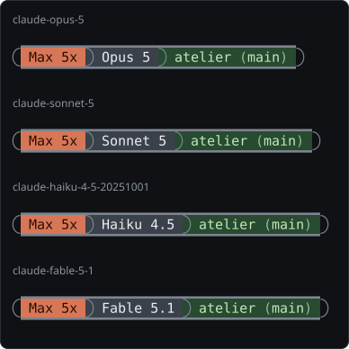
Le contexte étendu
Quand la session tourne sur une fenêtre de contexte supérieure à 200 000 jetons, le marqueur
« 1M » se colle au nom du modèle. Il mérite sa place : le basculement en contexte étendu divise le
pourcentage affiché par cinq d'un rafraîchissement à l'autre, sans que rien ait été libéré. Sans
marqueur, cette chute se lirait comme un compactage, et « ctx 12 % » ne dirait plus 12 % de quoi.
Le marqueur lit context_window_size, la fenêtre effective — celle sur
laquelle le pourcentage est calculé.
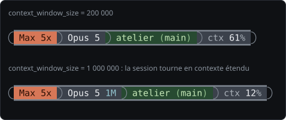
model.id de [1m].L'effort de raisonnement
L'effort (effort.level) est accolé au nom du modèle, atténué : il qualifie le modèle
et se consulte, là où le nom identifie la session. Il est affiché parce qu'il se règle à trois
endroits — settings.json, drapeau de lancement, /effort en cours de
session — dont le dernier ne laisse aucune trace ailleurs dans l'interface, et parce que c'est lui
qui gouverne la vitesse à laquelle se remplissent les fenêtres affichées plus loin.
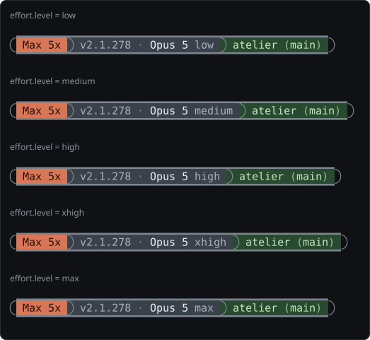
Les marqueurs de mode
Deux états inhabituels de la session sont marqués dans la teinte des marqueurs, la même que le
« 1M » : fast quand le mode rapide est actif
(fast_mode), sans réflexion quand la réflexion étendue
est coupée (thinking.enabled = false). Un mode ordinaire ne s'écrit pas.
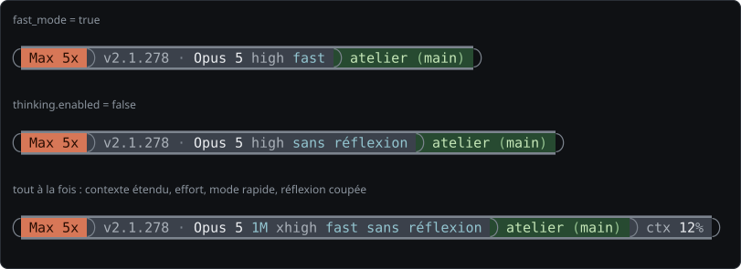
4. L'emplacement
Sur un espace de travail à plusieurs projets, savoir d'où l'on parle prime sur le reste : c'est la seule information de la ligne que l'œil doive retrouver sans la chercher. D'où son compartiment à part, en sauge, et ses deux teintes : les ancêtres du chemin et les parenthèses en sourd, ce qui situe ; la feuille et la branche en clair, ce qui distingue.
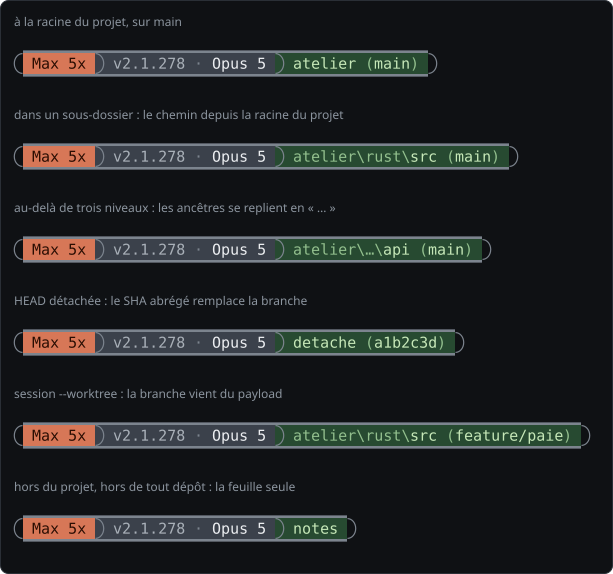
workspace.project_dir) tant qu'il reste court : la racine, ou la racine
et un sous-dossier. Plus bas, seule la feuille reste, derrière « …\ » : c'est elle qui distingue
le dossier, et la ligne ne s'allonge pas avec la profondeur. La
branche se lit dans .git/HEAD, en remontant depuis le répertoire courant ; une HEAD
détachée donne son SHA abrégé ; une session --worktree reçoit sa branche du payload.
Hors du projet, ou hors de tout dépôt, il reste la feuille seule.La comparaison entre répertoire courant et racine du projet ignore la casse : sous Windows, deux écritures du même chemin ne diffèrent souvent que par elle, et rien ne garantit que Claude Code renvoie les deux dans la même.
5. Les mesures : contexte et fenêtres
Le dernier compartiment porte jusqu'à trois compteurs, chacun dans sa tranche, joints par un
arc : l'occupation du contexte (ctx), la fenêtre de 5 heures (5h) et la
fenêtre de 7 jours (7j). Chacun a ses deux seuils — alerte, puis critique — et c'est
le sien qui teinte sa tranche : un contexte calme reste sur l'ardoise quand la fenêtre de 5 heures
passe au rouge. Jusqu'à la version 2.3.0, le pire des trois teintait le compartiment entier.
Le contexte
ctx affiche context_window.used_percentage. Il est absent tant
que la valeur est nulle — avant le premier appel, et de nouveau après un /compact
tant que rien n'a été renvoyé — plutôt que d'afficher un « ctx 0 % » qui se lirait comme une mesure.
Seuils : 80 % et 90 %. Les trois états sont montrés en § 6.
La jauge
Chaque fenêtre précède sa valeur d'une jauge fine de deux cellules, à seize crans : un cran
tous les 6,25 points. Le plein se trace en huitièmes de bloc (▏ à █),
la cellule de gauche d'abord, dans l'encre du palier de la valeur ; le vide est une
rainure, un fond un ton au-dessus de celui de la mesure. Elle annonce le remplissage
que le nombre chiffre, et vaut pour une valeur mémorisée ou estimée comme pour une mesure fraîche.
Le contexte n'en a pas : une fenêtre se remplit vers un plafond qu'on subit, le contexte se
compacte.
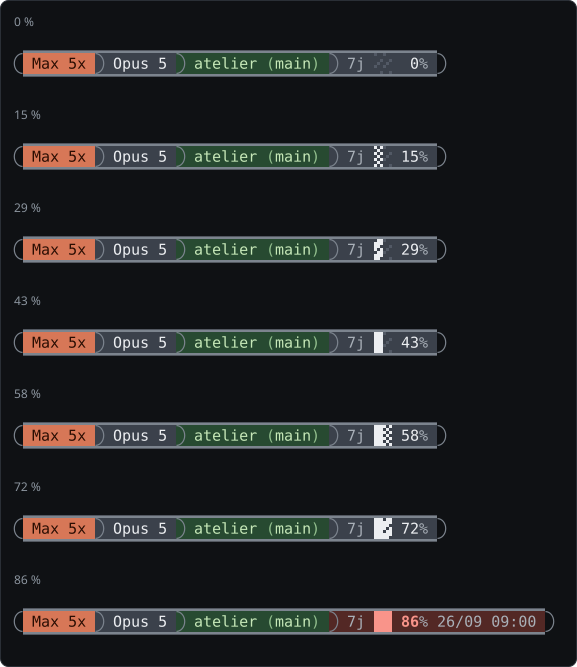
NO_COLOR, la jauge garde ses
sept crans de densité — voir § 8.La fenêtre de 5 heures
Elle porte toujours son heure de remise à zéro, atténuée : c'est un repère de planification, pas une valeur à surveiller. Le mot « reset » n'y est pas — une heure qui suit un pourcentage, dans un segment de fenêtre, ne peut désigner que cela. Entre la valeur et l'heure peut s'intercaler le rythme, mesuré par la ligne elle-même.
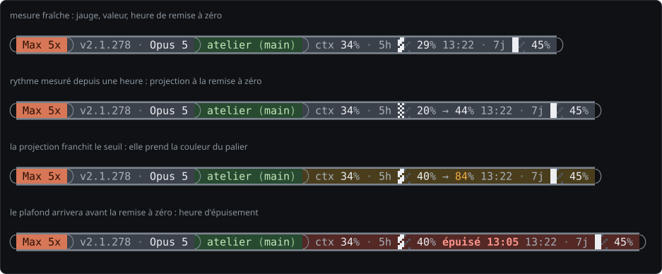
Le rythme se tait dès qu'il n'a rien d'honnête à dire : observation trop courte, extrapolation de plus de six fois la durée observée, compteur revenu en arrière (nouvelle fenêtre), aucune consommation depuis l'ancrage. Une projection fausse mais affirmée coûterait plus cher qu'un segment absent, puisqu'elle porte la couleur du palier critique et finirait par la déprécier partout ailleurs.
La fenêtre de 7 jours
À l'échelle de la semaine, l'heure de remise à zéro n'est actionnable qu'une fois le plafond en vue : elle n'apparaît qu'à partir du seuil d'alerte, précédée de la date quand elle ne tombe pas aujourd'hui.
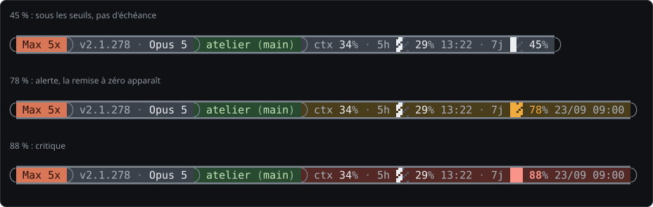
Les marqueurs « ~ » et « ≈ »
Collé au pourcentage, à gauche, un marqueur dit quand la valeur n'est pas une mesure fraîche. Il qualifie la mesure, pas le compteur — d'où sa place contre le nombre.
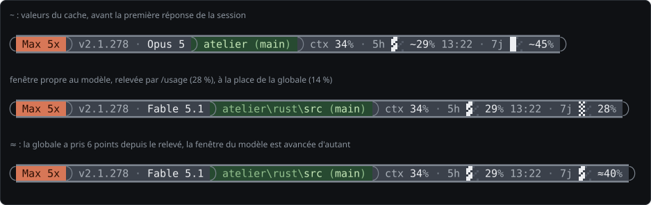
~ : la valeur vient du cache de la
ligne — celle d'avant la première réponse de la session, ou un relevé de /usage vieux
de plus d'une heure. Ancienne, pas fausse. Deuxième ligne : sous Fable, la fenêtre propre au
modèle — la « Fable limit » de l'écran /usage, que Claude Code persiste dans
~/.claude.json — prend la place de la fenêtre globale, sauf quand celle-ci est en
alerte et plus remplie. ≈ : ce relevé ne bouge qu'à l'ouverture de
/usage, mais la fenêtre globale du payload est fraîche à chaque réponse ; ce qu'elle a
pris depuis le relevé, la fenêtre du modèle l'a pris aussi, au rapport des deux budgets, et la
ligne l'avance d'autant. Sous l'un comme sous l'autre marqueur, le rythme se tait : projeter à
partir d'une valeur déjà périmée, ou déjà estimée, empilerait deux approximations.Les seuils selon le modèle
Le budget hebdomadaire est unique quel que soit le modèle, mais il se vide au prix du jeton : à travail égal, Fable 5.1 consomme deux fois ce qu'Opus 5 consomme. Sous un modèle plus coûteux, la ligne abaisse les seuils de la fenêtre de 7 jours de sorte que l'alerte laisse le même temps de réaction : la réserve entre le seuil et le plafond est doublée, 75 % devient 50 %, 85 % devient 70 %. Un facteur inférieur à 1 ne relève jamais rien : une session Sonnet ne rend pas moins cher ce que Fable a déjà consommé la même semaine.
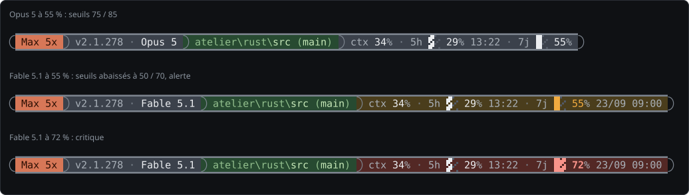
| Famille | Facteur | Seuils 7 j |
|---|---|---|
| Fable, Mythos | 2 | 50 % · 70 % |
| Opus | 1 | 75 % · 85 % |
| Sonnet | 0,4 | 75 % · 85 % (jamais relevés) |
| Haiku | 0,2 | 75 % · 85 % (jamais relevés) |
| hors table | 1 | 75 % · 85 % |
6. Les paliers et les couleurs
Le corps de la capsule est neutre ; c'est le palier qui colore. Chaque mesure prend le fond de son propre palier, sa valeur l'encre correspondante — en gras au palier critique —, et son cadre cette même encre : les deux bords au-dessus et au-dessous d'elle, et l'arc qui la ferme. L'arc qui sépare deux mesures prend l'encre de la plus grave des deux.
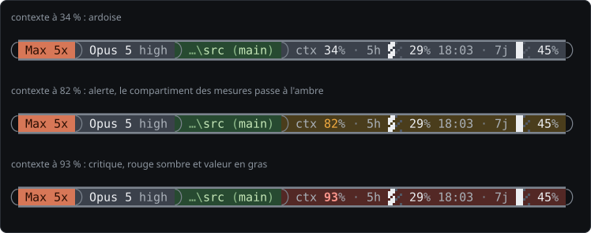
| Compteur | Alerte | Critique | Réaction attendue |
|---|---|---|---|
| ctx | 80 % | 90 % | compacter, ou terminer proprement |
| 5h | 80 % | 90 % | lever le pied quelques heures |
| 7j | 75 % | 85 % | lever le pied pour la semaine (50 / 70 sous Fable) |
| projection → | mêmes seuils que le compteur | anticiper | |
| épuisé | toujours critique | s'arrêter avant l'heure annoncée | |
| Teinte | Rôle | RVB |
|---|---|---|
| terre cuite | fond de la tête | 215 · 119 · 87 |
| ardoise | fond de l'identité et des mesures sous leurs seuils | 59 · 65 · 75 |
| sauge | fond de l'emplacement | 39 · 74 · 49 |
| ambre sombre | fond d'une mesure en alerte | 74 · 61 · 28 |
| rouge sombre | fond d'une mesure au critique | 83 · 40 · 37 |
| ambre | valeur, jauge et cadre d'une mesure en alerte | 242 · 171 · 63 |
| corail | valeur, jauge et cadre d'une mesure au critique | 249 · 148 · 138 |
| rainure | vide de la jauge sur l'ardoise (sur l'ambre sombre : 106 · 90 · 48 ; sur le rouge sombre : 112 · 62 · 58) | 82 · 89 · 101 |
| gris de contour | caps, jonctions et bords sous les seuils | 124 · 132 · 142 |
| cyan des marqueurs | 1M, fast, sans réflexion | 147 · 197 · 208 |
7. Largeur du terminal et repli
Claude Code ne coupe pas une ligne plus large que son terminal : il la replie sur le rang suivant, caps compris, et la forme se casse. La ligne mesure donc elle-même la largeur de la console — celle du terminal, retrouvée à travers le pseudo-terminal que Windows lui donne — et se replie d'elle-même, à une frontière propre, dès qu'un rang dépasserait la capacité (la largeur moins une cellule de marge).
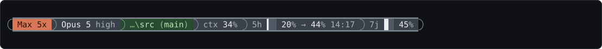
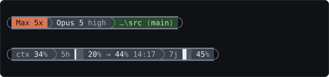
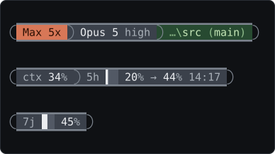
Le nombre de rangs croît donc avec l'étroitesse de la fenêtre, comme le ferait l'enroulement de Claude Code — mais chaque rang est une capsule entière, caps et cadre compris. Sans console à mesurer (un autre lanceur, un harnais qui redirige tout), la ligne garde sa disposition fixe sur un rang.
8. Sans couleur
La variable d'environnement NO_COLOR, définie et non vide, retire tout ce qui n'est
que forme : fonds, caps, jonctions, bords, liserés, saut de ligne. Il reste le contenu, sur une
seule ligne, que le terminal enroule s'il le faut.
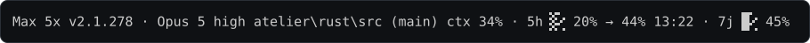
statusline.ps1, produit encore : le
harnais de non-régression compare les deux sous NO_COLOR. Les mesures y restent
jointes par le point médian, et la jauge y garde ses sept crans de densité (░░ à
██, un cran tous les 14,3 points) : sans fond, la jauge fine n'aurait pas de
rainure, et une valeur de 10 % n'y serait qu'un trait isolé.9. Quand il manque des choses
Chaque segment sait se retirer, et la ligne assemblée passe par un dernier filtre : si elle est blanche, le nom du modèle la remplace ; s'il manque aussi, « Claude ». Le programme rend toujours 0 : une sortie vide ou un code non nul effacerait l'affichage dans l'interface.
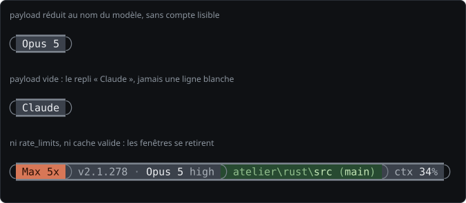
rate_limits, comme avant la première réponse d'une session, et un cache dont la
fenêtre est déjà passée : les fenêtres se retirent, le contexte reste.10. Installation, réglages, diagnostic
Le binaire se déclare dans %USERPROFILE%\.claude\settings.json :
"statusLine": {
"type": "command",
"command": "\"C:/chemin/vers/statusline.exe\"",
"padding": 0,
"refreshInterval": 1
}Le fichier README.md du dépôt donne les deux voies —
binaire de la dernière Release, ou cargo build --release — et
compiler-statusline.bat enchaîne compilation et dépôt du binaire dans
%USERPROFILE%\.claude.
Windows Terminal est conseillé. Aucune police du poste n'a besoin de porter les
arcs Powerline (U+E0B5, U+E0B7) ni les huitièmes de bloc du cadre et de
la jauge (▁ ▔, ▏ à ▉) : Windows Terminal les trace
lui-même, sans réglage particulier — vérifié à l'écran pour les huitièmes de la jauge, huit
largeurs distinctes en corps 8. Dans un autre terminal, arcs et huitièmes peuvent manquer ou
sortir d'une police de repli ; le contenu, lui, reste lisible.
Où vit l'état
%LOCALAPPDATA%\claude-code\statusline-cache.json— la dernière valeur de chaque fenêtre et l'ancrage de mesure du rythme. C'est ce cache qui permet d'afficher « ~ » avant la première réponse d'une session, et de projeter la consommation.~/.claude.json— lu seulement : l'abonnement, et le dernier relevé de/usage(cachedUsageUtilization) pour la fenêtre propre au modèle.
Quand la ligne clignote
analyser-journal.ps1 répond à une seule question : le programme s'est-il tu, ou le
clignotement vient-il d'ailleurs ? -Activer pose un fichier témoin, et le binaire
journalise chaque lancement tant qu'il existe ; -Arreter le retire ; sans drapeau, le
script dépouille le journal et nomme les intervalles trop longs — un lancement manquant est une
ligne effacée, une cadence régulière disculpe le programme. -Autour HH:mm:ss montre
les lancements autour d'un clignotement observé à l'œil.
11. Ce que Claude Code envoie
À chaque rafraîchissement, Claude Code lance le binaire et lui écrit un objet JSON sur l'entrée standard. Les champs lus :
| Champ | Segment | Remarque |
|---|---|---|
model.display_name, model.id | modèle, famille | l'identifiant porte le suffixe [1m] en contexte étendu |
workspace.current_dir, workspace.project_dir, cwd | emplacement | cwd double current_dir |
worktree.branch | branche | sessions --worktree seulement |
context_window.used_percentage, context_window.context_window_size | ctx, marqueur 1M | nul avant le premier appel |
rate_limits.five_hour, rate_limits.seven_day | 5h, 7j | used_percentage et resets_at (Unix, ms ou ISO 8601) |
effort.level | effort | chaîne non vide |
fast_mode, thinking.enabled | marqueurs | booléens, contrôlés en type |
Un exemple fabriqué, tel que le générateur de ce guide en soumet :
{
"model": { "id": "claude-opus-5", "display_name": "Opus 5" },
"workspace": { "current_dir": "D:\\projets\\atelier\\rust\\src", "project_dir": "D:\\projets\\atelier" },
"effort": { "level": "high" },
"context_window": { "used_percentage": 34 },
"rate_limits": {
"five_hour": { "used_percentage": 20, "resets_at": 1789907000 },
"seven_day": { "used_percentage": 45, "resets_at": 1790240400 }
}
}12. Régénérer les figures
Les images de ce guide sont produites par guide/generer-guide.ps1 (PowerShell 7).
Le script fabrique un bac isolé sous %TEMP% — dépôts Git factices, configurations
d'abonnement, relevés de /usage, cache — et n'approche ni le compte, ni le cache, ni les
dépôts du poste. Chaque cas est exécuté sous une console cachée redimensionnée à la largeur voulue,
ce qui donne les vrais replis à 120, 70 et 40 colonnes ; la sortie ANSI est ensuite convertie en
SVG, les arcs et les blocs tracés en formes pour ne pas dépendre des polices du lecteur.
pwsh -File guide\generer-guide.ps1 # toutes les figures, dans guide\
pwsh -File guide\generer-guide.ps1 -Lister # les cas en texte brut, sans écrire
pwsh -File guide\generer-guide.ps1 -Filtre 'largeur-*' -Exe C:\chemin\statusline.exeLes heures affichées dans les figures sont celles du moment de la génération ; les pourcentages, les projections et les paliers, eux, sont fixés par les cas et ne bougent pas d'une génération à l'autre. Après une évolution du binaire, régénérer puis relire ce guide : une figure qui ne correspond plus au texte signale une évolution à documenter.